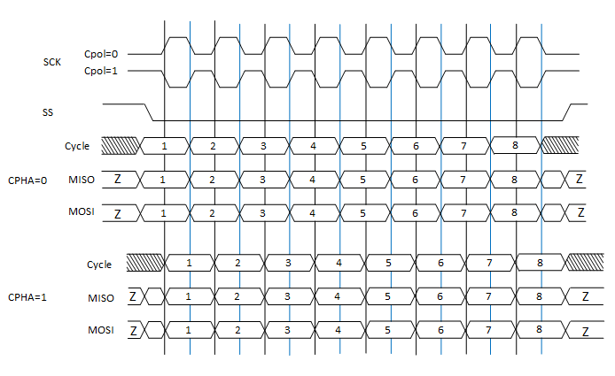
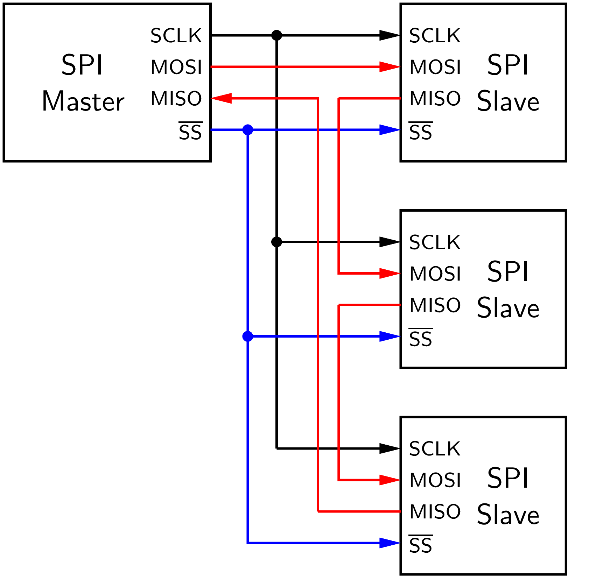

Zbernica SPI #
Popis #
SPI (Serial Peripheral Interface) je synchrónne sériové rozhranie používané na komunikáciu na krátke vzdialenosti medzi procesorom a periférnymi obvodmi (prevodníky, pamäte, displeje). Vyvinuté bolo na prelome 70. a 80. rokov 20. storočia spoločnosťou Motorola a umožňuje obojsmernú full-duplex komunikáciu na spoločnej zbernici. Podrobný popis rozhrania SPI je uvedený v dokumentácii. Výhodou zbernice SPI je možnosť použitia jednoduchých posuvných registrov ak periférnych zariadení.
Zariadenia na zbernici:
Master
riadi časovanie prenášaných dát generovaním hodinového signálu SCLK (System Clock)
určuje, s ktorým zariadením bude komunikácia prebiehať pomocou signálu SS (Slave Select)
vysiela dáta pomocou signálu MOSI (Master Out Slave In)
prijíma dáta pomocou signálu MISO (Master In Slave Out)
Slave
ak je aktivovaný pomocou signálu SS, potom prijíma alebo vysiela dáta synchronizované na signál SCLK
Časovanie zbernice #
Konfigurácii parametrov zbernice je určená parametrami CPOL (polarita sgnálov) a CPHA (fáza signálov)
CPOL - polarita hodinového signálu
CPOL=0 aktívna úroveň signálu je H
CPOL=1 aktívna úroveň signálu je L
CPHA - určuje okamžik zmeny hodnoty dát pri vysielaní
CPHA=0 signál mení hodnotu pri zostupnej hrane a číta sa pri nábežnej hrane hodinového signálu
CPHA=1 signál mení hodnotu pri nábežnej hrane a číta sa pri zostupnej hrane hodinového signálu


Obr. 29 Základné módy časovania zbernice SPI.#
Zapojenie #
Základné zapojenie #

Obr. 30 Základné zapojenie zariadení na zbernici SPI (Master-Slave).#
Paralelné zapojenie #

Obr. 31 Základné zapojenie zariadení na zbernici SPI (Multi-subnode).#
Reťazové zapojenie #
V niektorých prípadoch môžu byť zariadenia zapojené v konfigurácii reťazového zapojenia (daisy chain), kde je výstup predchádzajúceho Slave zariadenia pripojený na vstup nasledujúceho Slave zariadenia. Výstup posledného Slave zariadenia je pripojený nazad k Master zariadeniu. Posuvné registre jednotlivých zariadení takto tvoria jeden veľký posuvný register, v ktorom sa dáta posúvajú medzi jednotlivými zariadeniami. Táto konfigurácia vyžaduje len jeden signál SS.


Obr. 32 Reťazenie zariadení na zbernici SPI (Daisy-Chain).#
Programovanie #
Knižnica pyb obsahuje pre obsluhu sériového rozhrania triedu SPI. Signál NSS pre výber periférie nie je v knižnici pyb.SPI použitý, je potrebné ho ovládať samostatne prostredníctvom triedy pyb.Pin. Pripojenie rozhraní SPI k pinom mikrokontroléra je tabuľke:
Periféria |
Nucleo-64 |
Arduino-UNO |
Alternatíva |
|---|---|---|---|
SPI1 NSS |
PA4 - NC |
A2 |
PA15 - NC |
SPI1 SCK |
PB3 |
D3 |
PA5 |
SPI1 MISO |
PB4 |
D5 |
PA6 |
SPI1 MOSI |
PB5 |
D4 |
PA7 |
SPI2 NSS |
PB12 - NC |
PB9 - NC |
|
SPI2 SCK |
PB13 |
PB10 |
|
SPI2 MISO |
PB14 |
PC2 |
|
SPI2 MOSI |
PB15 |
PC3 |
Rekonfigurácia pre Arduino
Rozhranie SPI1 na doske NUCLEO-64 nie je štandardne pripojené ku pinom konektora Arduino-UNO.
Pomocou funkcie alternatívnych pinov možeme pripojenie rozhrania rekonfigurovať.
p=Pin('PA7')
p.af_list()
[Pin.AF1_TIM1, Pin.AF2_TIM3, Pin.AF3_TIM8, Pin.AF5_SPI1, Pin.AF14_TIM17]
# Konfiguracia pre kompatibilitu SPI1 s Arduinom
p_mosi = Pin('PA7', mode=Pin.ALT, alt=Pin.AF5_SPI1)
p_miso = Pin('PA6', mode=Pin.ALT, alt=Pin.AF5_SPI1)
p_sck = Pin('PA5', mode=Pin.ALT, alt=Pin.AF5_SPI1)
API #
Konštruktor / deštruktor
SPI.init(mode, baudrate=328125, *, prescaler=-1,
polarity=1, phase=0, bits=8, firstbit=SPI.MSB,
ti=False, crc=None)
SPI.deinit()
mode - typ zariadenia, SPI.CONTROLLER / SPI.PERIPHERAL
baudrate - prenosová rýchlosť, hodnoty podporované procesorom
prescaler - delič hodnoty prenosovej rýchlosti, 1/2/4/8/16/32/64/128/256
firstbit - poradie bitov, SPI.LSB / SPI.MSB
polarity - hodnota CPOL, 0/1
phase - hodnota CPHA, 0/1
ti - konvencia TI / Motorola, True / False
crc - kontrolná suma
Metódy
SPI.recv(recv, *, timeout=5000)
SPI.send(send, *, timeout=5000)
SPI.send_recv(send, recv=None, *, timeout=5000)
Príklad inicializácie a vyslania 1 Byte
from pyb import SPI
# inicializacia
pin = Pin('PB1', Pin.OUT)
spi = SPI(2, SPI.CONTROLLER, baudrate=100000, polarity=0, phase=0, crc=None)
# vyslanie jedneho byte
pin.value(False)
spi.send(0x12)
pin.value(True)